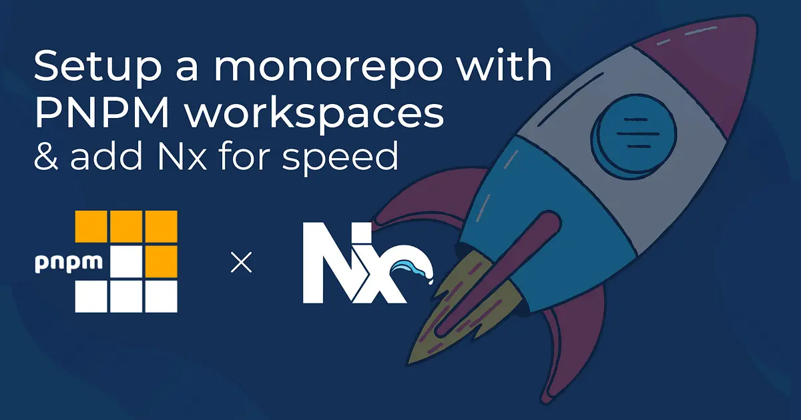
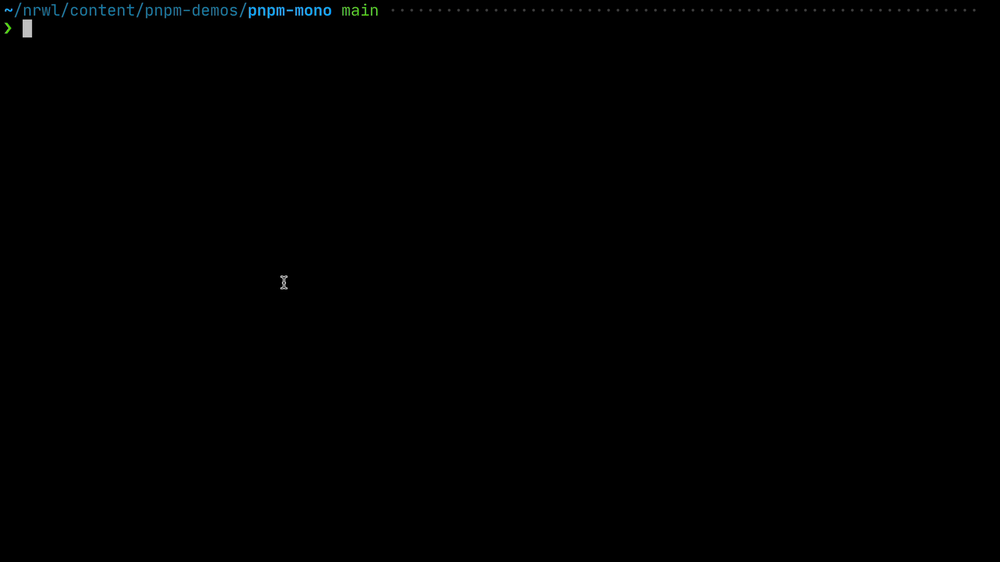

使用 PNPM 工作区配置 Monorepo 项目，并通过 Nx 提升构建速度
HaoTian · 2024-11-10 19:13:06
在本文中，我们将深入了解如何使用 PNPM 工作区 配置一个新的 monorepo，它包含一个 Remix 应用和一个基于 React 的库。我们将学习如何使用 PNPM 运行命令，如何并行运行它们，最后添加 Nx 来实现更复杂的任务调度，包括命令缓存等功能。
初始化一个新的 PNPM 工作区
首先，确保你已安装 PNPM。可以参考官方文档中的安装页面获取详细的安装步骤。对于需要管理多个 NPM/PNPM 版本和 Node 版本的用户，建议使用 Volta 等工具。
创建一个名为 pnpm-mono 的新文件夹，进入该文件夹，并运行 pnpm init 生成顶级 package.json 文件，这将作为我们 PNPM monorepo 的根 package.json 文件。
mkdir pnpm-mono
cd pnpm-mono
pnpm init
同时初始化一个新的 Git 仓库也很有用，这样可以在设置过程中随时提交和备份。
# .gitignore
node_modules
dist
build
设置 Monorepo 结构
Monorepo 的结构可以根据用途而有所不同，通常有两种类型：
- 基于包的仓库：用于开发和发布一组可复用的包，通常用于开源项目，常见的例子包括 Angular、React 和 Vue，通常包含一个
packages文件夹，并发布到公共注册表如 NPM。 - 基于应用的仓库：主要用于开发应用程序和产品，常用于公司项目。通常包含
apps文件夹（用于存放可构建和部署的应用）和packages或libs文件夹（存放为应用服务的库），部分库也可以发布到公共注册表。
在本文中，我们将使用“基于应用”的方法来展示如何在 monorepo 内构建一个应用程序并使用内部包。
在 pnpm-mono 中创建 apps 和 packages 文件夹。
mkdir apps packages
现在让我们配置 PNPM 以正确识别 monorepo 工作区。基本上，我们需要在仓库根目录下创建一个 pnpm-workspace.yaml 文件，定义 monorepo 的结构。
# pnpm-workspace.yaml
packages:
# executable/launchable applications
- 'apps/*'
# all packages in subdirs of packages/ and components/
- 'packages/*'
添加 Remix 应用程序
现在我们可以添加第一个应用程序了。本文示例中选择了 Remix，但其实可以容纳任何类型的应用程序。
信息：我们在此使用常规的 Remix 安装和设置流程，可以在其文档页面中找到。
由于我们希望将应用程序放在 apps 文件夹中，因此需要先进入该目录：
cd apps
npx create-remix@latest
在设置 Remix 应用时，系统会要求你输入应用名称。我们可以使用 “my-remix-app” 作为示例名称，你也可以选择其他名称。此外，Remix 的设置过程还会询问你一些问题来定制具体的配置，这些选项对于本文并不重要，所以可以根据自己的需求选择。
完成后，你应该会在 apps/my-remix-app 文件夹中看到 Remix 应用，并且它已经有了一个配置好的 package.json 文件，其中包含了相关的脚本。
{
"private": true,
"sideEffects": false,
"scripts": {
"build": "remix build",
"dev": "remix dev",
"start": "remix-serve build"
}
// ...
}
在 monorepo 中，通常希望从仓库根目录运行命令，这样就不需要在文件夹之间来回切换。PNPM 工作区提供了一种方法，可以通过传递 filter 参数来实现这一点。
pnpm --filter <package-name> <command>
目前（在撰写本文时），Remix 的默认 package.json 文件没有定义 name 属性，而 PNPM 需要该属性才能运行包。因此，我们需要在 apps/my-remix-app/package.json 中定义一个 name 属性。
{
"name": "my-remix-app",
"private": true,
"sideEffects": false
// ...
}
你现在应该可以通过以下命令以开发模式运行 Remix 应用：
pnpm --filter my-remix-app dev

创建一个共享 UI 库
现在我们已经设置了应用程序，接下来创建一个可以被应用程序消费的库包。这将是一个共享的 UI 库，帮助我们在不同的应用程序中复用组件。
cd packages
mkdir shared-ui
接下来，让我们创建一个 package.json 文件，内容如下（你也可以使用 pnpm init 命令并进行调整）：
{
"private": true,
"name": "shared-ui",
"description": "Shared UI components",
"scripts": {},
"keywords": [],
"author": "",
"license": "ISC",
"dependencies": {},
"devDependencies": {}
}
请注意，我们将其声明为 private，因为我们不希望将其发布到 NPM 或其他地方，而是仅在我们的工作空间中引用并使用它。我还删除了 version 属性，因为它没有被使用。
由于我选择了 React 作为技术栈（这样我们可以在 Remix 中导入它）和 TypeScript（因为它现在几乎可以算作标准），让我们从工作空间的根目录安装这些依赖项：
pnpm add --filter shared-ui react
pnpm add --filter shared-ui typescript -D
通过将 --filter shared-ui 传递给安装命令，我们将这些 NPM 包本地安装到 shared-ui 库中。
提示：请注意，如果库包和使用者（例如我们的应用）所使用的 React/TypeScript 版本不同，这可能会导致版本冲突。一种解决方法是采用* 单一版本策略*，将这些包移动到 monorepo 的根目录。
我们的第一个组件将是一个非常简单的 Button 组件。那么让我们创建一个吧：
// packages/shared-ui/Button.tsx
export function Button(props: any) {
return <button onClick={() => props.onClick()}>{props.children}</button>;
}
export default Button;
我们还希望拥有一个公共 API，在其中导出组件，以便在我们的 shared-ui 包外部使用：
// packages/shared-ui/index.tsx
export * from "./Button";
为了简单起见，我们只是使用 TypeScript 编译器来编译我们的包。我们本可以使用像 Rollup 或其他你喜欢的工具，进行更复杂的设置，将多个文件捆绑在一起等，但这些超出了本文的范围。
为了创建所需的编译输出，创建一个 packages/shared-ui/tsconfig.json 文件，内容如下：
{
"compilerOptions": {
"jsx": "react-jsx",
"allowJs": true,
"esModuleInterop": true,
"allowSyntheticDefaultImports": true,
"module": "commonjs",
"outDir": "./dist"
},
"include": ["."],
"exclude": ["dist", "node_modules", "**/*.spec.ts"]
}
在 monorepo 中，最好将公共配置部分提取到更高层次的配置文件中（例如在根目录），然后在各个项目中进行扩展。这样可以避免在多个 monorepo 包中出现大量重复。为了简化起见，我在这里将所有内容保留在一个地方。
如你所见，outDir 指向了一个包内的 dist 文件夹。因此，我们应该在 shared-ui 包的 package.json 中添加一个主入口点：
{
"private": true,
"name": "shared-ui",
"main": "dist/index.js"
}
最后，实际的构建过程包括删除之前输出的残留文件夹，然后调用 TypeScript 编译器（tsc）。以下是完整的 packages/shared-ui/package.json 文件：
{
"private": true,
"name": "shared-ui",
"description": "Shared UI components",
"main": "dist/index.js",
"scripts": {
"build": "rm -rf dist && tsc"
},
"keywords": [],
"author": "",
"license": "ISC",
"dependencies": {
"react": "^17.0.2"
},
"devDependencies": {
"typescript": "^4.6.4"
}
}
使用以下命令从 PNPM 工作区的根目录运行构建：
pnpm --filter shared-ui build
如果构建成功，你应该能在 packages/shared-ui/dist 文件夹中看到编译后的输出。
从 Remix 应用中使用我们的 shared-ui 包
我们的 shared-ui 库已经准备好了，可以在我们仓库中 apps 文件夹内托管的 Remix 应用中使用。我们可以手动将依赖项添加到 Remix 的 package.json 中，或者使用 PNPM 来添加它：
pnpm add shared-ui --filter my-remix-app --workspace
这将其添加到 apps/my-remix-app/package.json 中的依赖项：
{
"name": "my-remix-app",
"private": true,
"sideEffects": false,
// ...
"dependencies": {
...
"shared-ui": "workspace:*"
},
// ...
}
workspace:* 表示该包在工作区中是本地解析的，而不是从某个远程注册表（如 NPM）获取的。* 仅表示我们希望依赖于它的最新版本，而不是特定版本。只有在使用外部 NPM 包时，指定版本才有意义。
为了使用我们的 Button 组件，我们现在可以从某个 Remix 路由中导入它。将 apps/my-remix-app/app/routes/index.tsx 的内容替换为以下内容：
// apps/my-remix-app/app/routes/index.tsx
import { Button } from "shared-ui";
export default function Index() {
return (
<div>
<Button onClick={() => console.log("clicked")}>Click me</Button>
</div>
);
}
如果你现在再次运行 Remix 应用，应该能看到按钮被渲染出来。
pnpm --filter my-remix-app dev
如果你遇到以下错误，那是因为你需要先构建 shared-ui
Error: Cannot find module '/Users/juri/nrwl/content/pnpm-demos/pnpm-mono/apps/my-remix-app/node_modules/shared-ui/dist/index.js'. Please verify that the package.json has a valid "main" entry
at tryPackage (node:internal/modules/cjs/loader:353:19)
at Function.Module._findPath (node:internal/modules/cjs/loader:566:18)
at Function.Module._resolveFilename (node:internal/modules/cjs/loader:919:27)
at Function.Module._load (node:internal/modules/cjs/loader:778:27)
at Module.require (node:internal/modules/cjs/loader:1005:19)
at require (node:internal/modules/cjs/helpers:102:18)
at Object.<anonymous> (/Users/juri/nrwl/content/pnpm-demos/pnpm-mono/apps/my-remix-app/app/routes/index.tsx:1:24)
at Module._compile (node:internal/modules/cjs/loader:1105:14)
at Object.Module._extensions..js (node:internal/modules/cjs/loader:1159:10)
at Module.load (node:internal/modules/cjs/loader:981:32)
要构建它，运行：
pnpm --filter shared-ui build
为什么？这是因为 PNPM 创建了符号链接，以便能够引用和解析本地依赖项。通过将 shared-ui: "workspace:*" 添加到 Remix 的 package.json 中，你指示 PNPM 向 Remix 的 node_modules 文件夹添加一个符号链接。

PNPM 在本地 node_modules 文件夹中创建符号链接，以便能够导入本地包
使用 PNPM 运行命令
PNPM 提供了方便的功能来跨 monorepo 工作区运行命令。我们已经看到如何使用 --filter 对单个包进行命令作用域设置：
pnpm --filter my-remix-app dev
你也可以使用 -r 标志递归地在工作区中的所有包上运行命令。例如，假设你要对所有项目运行构建命令。
pnpm run -r buildScope: 2 of 3 workspace projects
packages/shared-ui build$ rm -rf dist && tsc
└─ Done in 603ms
apps/my-remix-app build$ remix build
│ Building Remix app in production mode...
│ The path "shared-ui" is imported in app/routes/index.tsx but shared-ui is not listed in your package.json
│ Built in 156ms
└─ Done in 547ms
类似地，你可以通过使用 --parallel 来并行运行命令。
pnpm run --parallel -r buildScope: 2 of 3 workspace projects
apps/my-remix-app build$ remix build
packages/shared-ui build$ rm -rf dist && tsc
apps/my-remix-app build: Building Remix app in production mode...
apps/my-remix-app build: The path "shared-ui" is imported in app/routes/index.tsx but shared-ui is not listed in your package.json dependencies. Did you forget to install it?
apps/my-remix-app build: Built in 176ms
apps/my-remix-app build: Done
packages/shared-ui build: Done
使用 Nx 加速
PNPM 工作区提供了一些基本功能，可以在 monorepo 包上运行任务，甚至是并行运行。随着 monorepo 的扩展，你可能会希望拥有更高级的方法，以便：
- 仅在发生变化的包上运行任务
- 基于文件内容的高级缓存，以避免重新运行已经计算过的任务
- 远程分布式缓存，以加速 CI
这正是 Nx 可以帮助的地方。它针对 monorepo 场景进行了优化，拥有先进的任务调度机制。我们仍然依赖于 PNPM 工作区提供的包安装和包链接机制，但使用 Nx 来以最有效的方式运行我们的任务。
安装 Nx
由于 Nx 将用于在整个 monorepo 工作区中运行操作，我们将在根目录的 package.json 中安装它。
pnpm add nx -D -w
使用 Nx 运行任务
Nx 使用以下形式来运行你的命令：
npx nx <target> <project>
target 是你想要执行的特定 NPM 脚本。
让我们尝试使用以下命令为我们的 shared-ui 包运行构建：
npx nx build shared-ui
这将产生以下输出：
nx run shared-ui:build
shared-ui@ build /Users/juri/nrwl/content/pnpm-demos/pnpm-mono/packages/shared-ui
rm -rf dist && tsc
NX Successfully ran target build for project shared-ui (1s)
Nx 会自动找到 shared-ui 并运行在 packages/shared-ui/package.json 中定义的 build 脚本。
类似地，要启动我们的 Remix 应用，运行 npx nx dev my-remix-app。
我们还可以通过以下方式在项目之间并行运行命令：
npx nx run-many --target=build --all
✔ nx run my-remix-app:build (1s)
✔ nx run shared-ui:build (1s)
NX Successfully ran target build for 2 projects (1s)
或者通过以下方式选择性地指定项目：
npx nx run-many --target=build --projects=my-remix-app,shared-ui
✔ nx run my-remix-app:build (1s)
✔ nx run shared-ui:build (1s)
NX Successfully ran target build for 2 projects (1s)
请注意，我在命令前面加上了 npx，这样可以运行 node_modules 文件夹中的 Nx 可执行文件。通过这种方式，我不需要全局安装 nx。如果你更喜欢全局安装，随时可以这么做。
配置缓存
将 Nx 添加到我们的 PNPM 工作区的主要好处之一是 通过缓存加速。计算缓存 是一种功能，它会收集不同的输入（源文件、环境变量、命令标志等），并计算一个哈希值存储在本地文件夹中。下次再次运行命令时，Nx 会查找匹配的哈希值，如果找到，它将恢复缓存。这包括恢复终端输出以及构建产物（例如 dist 文件夹中的 JS 文件）。
并非所有操作都可以缓存，只有那些没有副作用的操作才能缓存。例如，如果你使用相同的输入运行某个操作，它必须始终可靠地产生相同的输出。如果在该操作中调用了某些 API，那么它就无法缓存，因为即使输入参数相同，API 的结果也可能会有所不同。
为了启用缓存，我们需要配置可缓存的操作。为此，我们将在工作区的根目录下创建一个 nx.json 文件，并添加以下内容：
// nx.json
{
"tasksRunnerOptions": {
"default": {
"runner": "nx/tasks-runners/default",
"options": {
"cacheableOperations": ["build", "test"]
}
}
}
}
注意 cacheableOperations 数组，在这里我们指定了 build 和 test。你可以添加更多的操作，比如 lint。
启用这一设置后，如果我们第一次运行 Remix 应用程序的构建，它将像往常一样执行，预计大约需要 1 秒钟。
npx nx build my-remix-app
nx run my-remix-app:build
my-remix-app@ build /Users/juri/nrwl/content/pnpm-demos/pnpm-mono/apps/my-remix-app
remix buildBuilding Remix app in production mode...
The path "shared-ui" is imported in app/routes/index.tsx but shared-ui is not listed in your package.json dependencies. Did you forget to install it?
Built in 163ms
NX Successfully ran target build for project my-remix-app (1s)
如果你重新运行相同的命令，它现在会从缓存中提取，仅需几毫秒。
npx nx build my-remix-app> nx run my-remix-app:build [existing outputs match the cache, left as is]
my-remix-app@ build /Users/juri/nrwl/content/pnpm-demos/pnpm-mono/apps/my-remix-app
remix buildBuilding Remix app in production mode...
The path "shared-ui" is imported in app/routes/index.tsx but shared-ui is not listed in your package.json dependencies. Did you forget to install it?
Built in 163ms
NX Successfully ran target build for project my-remix-app (9ms)
Nx read the output from the cache instead of running the command for 1 out of 1 tasks.
你也可以从终端输出中看到“现有输出与缓存匹配，保持不变”，以及最后的“Nx 从缓存中读取了输出，而不是执行 1 个任务中的命令”。
启用缓存后，可以显著提高命令执行时间。如果缓存是远程分发的，它将变得更加有用，因为它可以与 CI 以及其他开发者的机器共享。对于 Nx，可以通过启用 Nx Cloud 来实现这一点，它提供每月 500 小时的免费存储（无需信用卡）以及无限小时数用于开源项目。
微调缓存
默认情况下，缓存机制将 所有项目级别的文件作为输入。然而，我们可能希望根据执行的目标区分哪些文件会被考虑。例如，如果只有单元测试的 spec 文件发生了变化，你可能不希望因为这个原因而使 build 任务的缓存失效。
为了说明这一点，首先运行 npx nx build my-remix-app 两次，以便启用缓存。接下来，修改 Remix 项目的 README.md 文件（apps/my-remix-app/README.md）。如果你重新运行 Remix 应用的构建，缓存会因为 README 文件的更改而失效。这显然可能不是我们希望的操作。
我们可以通过在 nx.json 中添加一个 targetDefaults 节点来微调缓存，并定义默认情况下 build 目标的 input 应该排除 *.md 文件。
// nx.json
{
"tasksRunnerOptions": {
"default": {
"runner": "nx/tasks-runners/default",
"options": {
"cacheableOperations": ["build", "test"]
}
}
},
"targetDefaults": {
"build": {
"inputs": ["!{projectRoot}/**/*.md"]
}
}
}
通过这个更改，在运行 build 任务时，MD 文件将不会被视为缓存输入的一部分。
请注意，所有路径 glob 是 相对于工作区的根目录 的。这避免了混淆，因为输入也可以在项目级别的
package.json中定义 (更多内容请见此)。你可以使用插值变量{projectRoot}和{workspaceRoot}来区分路径是应该指向项目特定文件还是工作区级别的文件。
重用缓存输入 Glob
你还可以进一步操作，假设你要在一个假设的 test 目标中也排除 markdown 文件，你可以通过将 glob 提取到 namedInputs 属性中来实现：
// nx.json
{
"tasksRunnerOptions": {
//...
},
"namedInputs": {
"noMarkdown": ["!{projectRoot}/**/*.md"]
},
"targetDefaults": {
"build": {
"inputs": ["noMarkdown", "^noMarkdown"]
},
"test": {
"inputs": ["noMarkdown", "^noMarkdown"]
}
}
}
通过在 namedInput 前面添加 ^，我们表示这应该也适用于项目的任何依赖项的变化。
定义任务依赖关系（即构建管道）
我们之前看到，当运行 Remix 开发服务器时，如果没有先编译依赖的 shared-ui 包，在运行 Remix 应用时会出现错误。
Error: Cannot find module '/Users/juri/nrwl/content/pnpm-demos/pnpm-mono/apps/my-remix-app/node_modules/shared-ui/dist/index.js'. Please verify that the package.json has a valid "main" entry
at tryPackage (node:internal/modules/cjs/loader:353:19)
at Function.Module._findPath (node:internal/modules/cjs/loader:566:18)
at Function.Module._resolveFilename (node:internal/modules/cjs/loader:919:27)
at Function.Module._load (node:internal/modules/cjs/loader:778:27)
at Module.require (node:internal/modules/cjs/loader:1005:19)
at require (node:internal/modules/cjs/helpers:102:18)
at Object.<anonymous> (/Users/juri/nrwl/content/pnpm-demos/pnpm-mono/apps/my-remix-app/app/routes/index.tsx:1:24)
at Module._compile (node:internal/modules/cjs/loader:1105:14)
at Object.Module._extensions..js (node:internal/modules/cjs/loader:1159:10)
at Module.load (node:internal/modules/cjs/loader:981:32)
为了解决这个问题，我们必须先手动构建 shared-ui。通常，你希望避免这种情况，这正是 Nx 提供 targetDefaults 定义（通常也称为“构建管道”）的原因。
我们可以在工作区根目录的 nx.json 中的 targetDefaults 属性中定义这些任务依赖关系。
作为第一个依赖项，我们希望定义每当我们在一个项目上运行 build 目标时，所有依赖项目的 build 目标应该先执行。我们可以通过向 build 任务定义添加一个额外的 dependsOn 属性来表达这一点：
{
"tasksRunnerOptions": {
//...
},
//...
"targetDefaults": {
"build": {
//...
"dependsOn": ["^build"]
}
}
}
与我们在定义 inputs 时看到的类似，这里的 ^ 表示目标应该在所有依赖项目上运行。如果去掉 ^，那么目标只会在同一个项目上调用。如果你有一个始终需要执行的 prebuild 步骤，这种方式会很有用。
接下来，我们还希望为我们的 Remix dev 命令定义一个 targetDefault，确保首先运行所有依赖包（例如我们的 shared-ui）上的 build。
{
"tasksRunnerOptions": {
//...
},
//...
"targetDefaults": {
"build": {
//...
"dependsOn": ["^build"]
},
"dev": {
"dependsOn": ["^build"]
}
}
}
这里是完整的 nx.json 文件，作为参考：
{
"tasksRunnerOptions": {
"default": {
"runner": "nx/tasks-runners/default",
"options": {
"cacheableOperations": ["build", "test"]
}
}
},
"namedInputs": {
"noMarkdown": ["!{projectRoot}/**/*.md"]
},
"targetDefaults": {
"build": {
"inputs": ["noMarkdown", "^noMarkdown"],
"dependsOn": ["^build"]
},
"dev": {
"dependsOn": ["^build"]
}
}
}
如果我们现在运行 npx nx build my-remix-app，可以看到 Nx 首先在依赖的项目上运行任务，然后才执行我们调用的命令。

Nx 强调了正在构建的依赖项目，但它将主要注意力集中在当前任务上，避免分心
仅运行已更改的部分
除了提供缓存功能外，Nx 还允许通过使用所谓的 “affected command” 来仅运行相对于基础分支已更改的部分。
你可以使用在工作区中定义的任何目标。例如：
npx nx affected:buildnpx nx affected:testnpx nx affected:lintnpx nx affected:publish
这是如何工作的？ Nx 根据你工作区中包的结构和依赖关系构建一个项目图。假设有以下假设的图：

单体仓库工作区的潜在图
每当我们在一个分支上运行受影响的命令时，Nx 会将所有的提交和相对变化与基准分支进行比较。默认情况下，基准分支是 main，但你可以在 nx.json 文件中进行细化配置：
{
"affected": {
"defaultBase": "main"
}
}
如果 lib2 在我们的功能分支中发生了变化，那么使用 affected:test 对工作区运行测试时，只会运行 lib2 和 appB 的测试。

如果“lib2”发生变化的影响项目
需要注意的是，如果我们运行 affected:build 并且在 nx.json 中定义了依赖关系，指示需要首先构建依赖项目（参见“定义任务依赖关系”部分），那么 affected:build 将会构建：
lib3lib2appB
但不会构建 lib1 或 appA。
其他功能
除了速度和任务调度改进外，通过将 Nx 添加到我们的 PNPM 工作区，我们还获得了一些额外的功能。让我们探索一些：
想要自动化创建包吗？
一旦你为一个包设置好了良好的配置，显然你会希望在创建新包时复制这个配置。通常的做法是：复制和粘贴，然后删除所有不需要的内容。
这既繁琐又容易出错。Nx 有一个名为“生成器”的概念，基本上是代码脚手架，它允许你在 monorepo 中生成新包，而不是复制和粘贴旧包。
如果这听起来很有趣，下面是一个操作指南：
动态终端输出
使用 PNPM 并行运行任务会导致终端输出变得非常混乱。由于不同命令的输出是并行执行的，因此日志信息交错在一起，难以解析。
pnpm run --parallel -r buildScope: 2 of 3 workspace projects
apps/my-remix-app build$ remix build
packages/shared-ui build$ rm -rf dist && tsc
apps/my-remix-app build: Building Remix app in production mode...
apps/my-remix-app build: The path "shared-ui" is imported in app/routes/index.tsx but shared-ui is not listed in your package.json dependencies. Did you forget to install it?
apps/my-remix-app build: Built in 176ms
apps/my-remix-app build: Done
packages/shared-ui build: Done
使用 Nx 运行任务时，终端输出是动态的，只显示当前执行命令所需的最相关的信息。当使用 Nx 运行相同的并行构建任务时，输出将如下所示：
Nx 动态显示正在计算的并行任务以及已成功完成的任务的终端输出
项目图可视化
npx nx graph
这将启动一个交互式的工作区项目图可视化，具有一些高级功能，如过滤、调试工作区结构等。

Nx 项目图可视化我们的 PNPM 工作区
附带说明：你可以在任何 PNPM 工作区上运行项目图，即使没有安装 Nx。运行
_npx nx graph_应该也能工作。
结论
我们完成了！以下是我们覆盖的一些内容：
- 如何设置基于 PNPM 的 monorepo 工作区
- 在 PNPM monorepo 中创建 Remix 和共享 React 库
- 如何使用 PNPM 运行不同的命令
- 如何将 Nx 添加到 monorepo 中并逐步采用
- 向 PNPM 工作区添加 Nx 后的好处和特性
你可以在 Nx Recipe GitHub 仓库 中找到这样的设置示例：
https://github.com/nrwl/nx-recipes/tree/main/pnpm-workspace
了解更多
- 🧠 Nx 文档
- 👩💻 Nx GitHub
- 💬 Nx 官方 Discord 服务器
- 📹 Nrwl YouTube 频道
- 🥚 免费 Egghead 课程